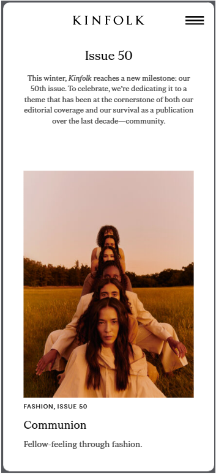
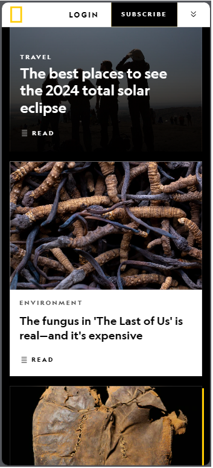

Visual Hierarchy
Using Google as an example, the visual hierarchy is evident in its search engine homepage. The primary focal point is the central search bar, which is larger and more prominent than other elements on the page. This emphasizes its significance and encourages users to enter their search queries.
White Space & clean design
Kinfolk
Kinfolk's website incorporates generous white space between various elements, such as text, images, and navigation. This emptiness helps create a sense of balance, enhances readability, and provides a visually pleasing experience. The design of Kinfolk's website is characterized by minimalism, avoiding unnecessary elements and keeping the layout clean.
Rule of Thirds
National Geographic
By adhering to the rule of thirds, National Geographic achieves a balanced and harmonious visual composition. It allows for a more dynamic and interesting layout compared to a centered or symmetrical approach. National Geographic's use of this rule enhances the overall visual experience on their website.